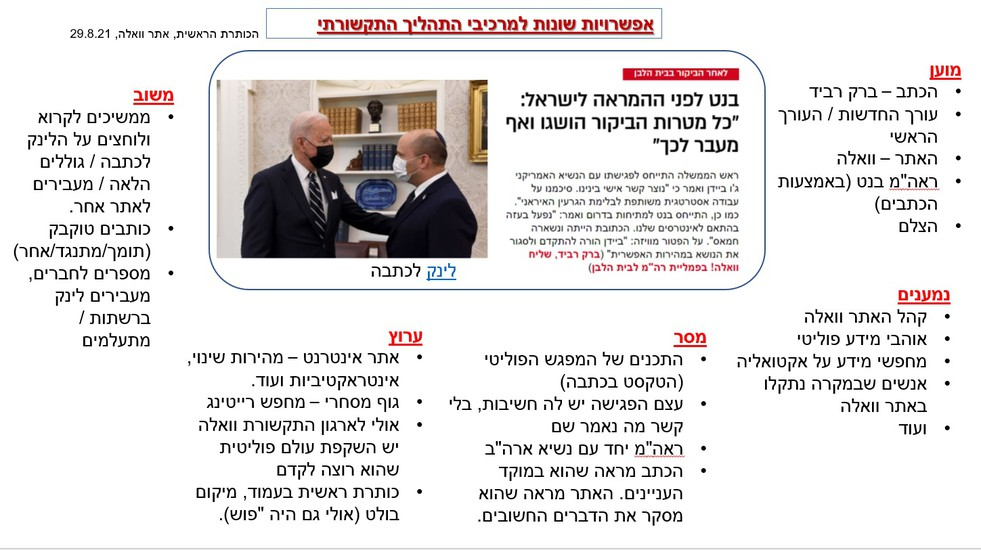

מרכיבי התהליך התקשורתי
מי אמר למי, באיזה ערוץ?
מושגי מפתח מהאגרון (גע במושג לפירוש)
מוען
נמען
מסר
ערוץ
משוב
המשתתפים
מי מדבר עם מי?
מוען: הזמר שבקליפ; הבמאי של הקליפ שמפיץ את הכישורים שלו; המפיק שמראה כמה הוא מוצלח ועוד.

נמענים: יש שמחפשים באופן יזום את הקליפ הזה ויש מי שבמקרה נחשף אליו. יש מי שעבר במקרה מול המסך וראה ויש מי שמחכה לזה וצופה בעיון.
המנגנון
איך זה עובד?
מסר: הזמר מעביר מסר (מילולי, ויזואלי), הבמאי מעביר מסר, מפרסמים מעבירים מסר. יש מסר במילים, בתנועות, בבגדים ובאביזרים.
ערוץ: חלק יראו ברשת וחלק בטלוויזיה, אצל חלק זה יגיע ברשתות החברתיות, בהודעות וואטסאפ וחלק יחשפו באתרים שונים.
משוב: חלק אוהבים, חלק לא אוהבים, חלק בזים ולועגים, חלק שרים, חלק מתעלמים ועוד.
תובנה
כדאי לזכור
יתכנו תשובות שונות לאותו המרכיב.
אותו אירוע תקשורתי יכול לכלול מספר מוענים, מגוון נמענים, מסרים שונים (גלויים וסמויים) וערוצים מרובים.
